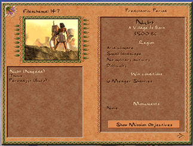
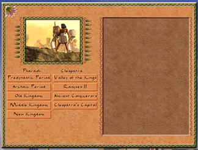
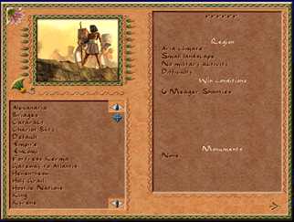

Scenario Selection Window Goes Script-Driven

The scenario selection screen — the first thing you see when starting a campaign or loading a custom map — has been fully migrated from C++ to JavaScript. All three views of the window (campaign period picker, mission list with info panel, and custom map browser) are now driven by script files, following the same pattern established for the Tax Collector, Sound Settings, and Mission Choice windows.
Three Views, One Window
The scenario selection screen is actually three different layouts sharing a single window backend:
Campaign Period Selection

The top-level campaign picker, handled by ui_scenario_selection_campaign.js. It lists the
two campaigns (Pharaoh and Cleopatra) and their sub-periods — Archaic Period, Old Kingdom, Middle Kingdom,
and so on. Hovering a period button now fires onhover/onunhover events that
update a preview thumbnail and description text, all wired in JavaScript with no C++ touch needed.
Mission List with Info Panel
Once a period is selected, the window switches to the mission list. The right-hand side panel —
previously rendered by draw_side_panel_info in C++ — now populates from script. On every
selection change, ui_scenario_selection.js fills __scenario_selection_info
and updates individual text widgets for region name, map size, military activity, difficulty, win
criteria, player records, and monument slots. The list itself also switches between showing win goals
and high scores via a toggle that is now entirely JavaScript state.
Custom Map Browser

The custom map picker, handled by ui_scenario_selection_custom.js, works the same way:
selecting a .map file from the scrollable list triggers script-side info updates. The
save-file schema version, previously shown via a hardcoded debug text draw in C++, is now routed through
a text widget via __game_io_file_schema_version.
What Was Removed from C++
scenario_selection.cpp lost roughly 200 lines across four functions that no longer exist:
draw_side_panel_info— rendered mission details for campaign missionsdraw_custom_side_panel_info— same for custom mapsdraw_scores— drew player high scores and previous attempts- Two overloads of
dispatch_scenario_info_script— the old bridge that pushed data into JS
New C++ Bindings
To give scripts access to all the data the old C++ code had, a set of new bindings was added:
__game_mission_title,__game_mission_subtitle— localized mission name and tagline__game_mission_win_criteria— prosperity, culture, monument, and kingdom goals__game_mission_player_records— best time, highest score, previous attempts__game_scenario_locale_year_order— B.C./A.D. display order for the map date__game_scenario_monument_slots— list of monuments required for this mission__game_ui_dispatch_autoconfig_event(section, event)— generic event dispatcher for autoconfig windows
Why It Matters
With the selection screen in script, it becomes possible to customize what information is shown about a
mission without touching engine code. A mod can add extra metadata fields, reorder the panel layout, or
display custom win conditions — and iterate on it live using the --mixed hot-reload flag
without restarting the game. It also sets up the foundation for campaign mods that want to plug in their
own period structure and mission trees through configuration rather than code.